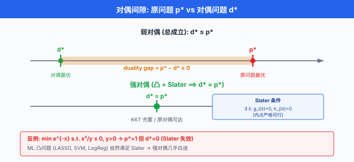
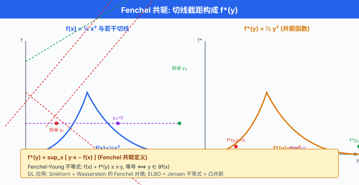

对偶与 KKT¶
一句话总结：对偶把原问题的"极小"翻成对偶变量的"极大"，给你另一把钥匙打开同一扇门 —— KKT 条件是这把钥匙的齿型，而 SVM 的核技巧就住在钥匙的口袋里。
每一个约束优化问题，都有一个隐藏的双胞胎在暗中站着。 它跟原问题看着不像 —— 变量换了、目标反了、约束简化了 —— 却在最优处握手，有时甚至比原问题更好解。 这就是对偶 (duality). 数学家用它证明存在性，算法工程师用它换视角，而机器学习圈最著名的应用是 SVM：原问题里那个不起眼的内积 \(x_i^\top x_j\)，在对偶问题里成了整个优化的核心 —— 一旦你把它换成 \(K(x_i, x_j)\)，核技巧 (kernel trick) 就凭空诞生。 这一节我们讲这门魔法的语法：拉格朗日函数、对偶问题、KKT 条件、Slater 条件、Fenchel 共轭。 讲完你会明白，LASSO 的次梯度、投影梯度、对抗训练里的 PGD，骨子里都是同一台对偶引擎在跑.
-
上一节我们把凸性铺满了：凸集、凸函数、强凸、L-光滑。 这一节顺势把约束优化的通用求解框架摆出来。 一旦你有一个凸问题带一堆不等式与等式约束，KKT 给你一套刀口锋利的最优性刻画：满足这几条方程 = 全局最优，一条都不能少。
-
更让人惊喜的是，KKT 在非凸问题上也常常给出必要条件。 深度学习里的 constrained training、adversarial training、projected gradient，全都依赖 KKT 的语言把"哪里可以走、哪里不能走"翻译成方程组。
从原问题到对偶：一个直觉¶
- 考虑一般的约束优化问题 (可能非凸):
-
这个问题叫原问题 (primal problem)，最优值记作 \(p^* = \min f(x)\). 我们直接解它可能很难 —— 约束把可行域切成一个复杂形状，目标函数在里面找谷底并非易事。
-
对偶的核心思想：与其硬啃约束，不如把约束用"惩罚项"的方式吸收到目标函数里，让问题变成无约束的 (但引入了新的变量). 惩罚的价格由对偶变量 (dual variable) 控制，然后我们对价格求最大，挤出最紧的下界。 这个"最紧下界"在合适条件下恰好等于原问题的最优值 —— 于是我们绕开了原问题，通过解一个可能简单得多的对偶问题，得到了原问题的答案。
-
SVM 是这套魔法最著名的例子。 原 SVM 有 \(n\) 个训练样本，就有 \(n\) 条不等式约束；通过对偶，变量从"权重向量 \(w \in \mathbb{R}^d\)" 换成"每个样本的对偶变量 \(\alpha_i\)"，目标函数只依赖训练样本之间的两两内积 \(x_i^\top x_j\). 于是核技巧登场：把内积换成任意核函数 \(K(x_i, x_j)\), SVM 就变成了非线性分类器 —— 而这一切都是因为对偶暴露出了内积结构.
拉格朗日函数¶
- 引入拉格朗日函数 (Lagrangian) \(L: \mathbb{R}^n \times \mathbb{R}^m \times \mathbb{R}^p \to \mathbb{R}\):
- 其中:
- \(\lambda_i \ge 0\) 是不等式约束 \(g_i(x) \le 0\) 的对偶变量，也叫Lagrange 乘子 (Lagrange multiplier). 非负性是关键 —— 因为 \(g_i(x) \le 0\)，我们希望"违反约束"(\(g_i(x) > 0\)) 时受罚，所以乘子必须与约束方向一致。
-
\(\nu_j \in \mathbb{R}\) 是等式约束 \(h_j(x) = 0\) 的对偶变量，无符号限制 —— 等式约束一旦违反，无论正向还是反向都算违反，所以罚项可正可负。
-
直觉：\(L\) 把每个约束翻译成一个"罚项". 若 \(x\) 不可行 (某个 \(g_i(x) > 0\))，我们可以把 \(\lambda_i \to +\infty\) 让罚项无穷大；若 \(x\) 可行，且不等式约束紧 (\(g_i(x) = 0\))，罚项不激活，\(L(x, \lambda, \nu) = f(x)\). 换句话说:
- 因此原问题可以重新表达成一个极小-极大问题:
对偶函数¶
- 把 \(\min\) 和 \(\sup\) 顺序交换，就得到对偶函数 (dual function):
-
对任意固定的 \((\lambda, \nu)\) 求关于 \(x\) 的下确界。 注意 \(x\) 不再受约束，是无约束极小！这是对偶最实用的一面：消掉约束，换成一个"参数化的无约束问题".
-
对偶函数有两条金刚不坏的性质:
性质 1：对偶函数总是凹的 (即使原问题非凸!)
-
\(L(x, \lambda, \nu)\) 关于 \((\lambda, \nu)\) 是仿射的 (线性 + 常数). 对一族仿射函数取 \(\inf\)，结果是仿射函数的逐点下确界，而仿射函数的逐点下确界总是凹的. 于是 \(g(\lambda, \nu)\) 关于 \((\lambda, \nu)\) 凹，与 \(f\) 或 \(g_i\) 是否凸无关.
-
这条给了我们一份免费午餐：无论原问题多离谱，对偶问题永远是凸的 (最大化凹函数 = 最小化凸函数).
性质 2：对偶函数提供原问题最优值的下界 —— 弱对偶
- 对任意 \(\lambda \ge 0\) 与 \(\nu\)，以及任意原可行点 \(x\) (即 \(g_i(x) \le 0, h_j(x) = 0\))，有:
- 因此:
- 对所有可行 \(x\) 取 \(\min\)，得到弱对偶 (weak duality):
对偶问题与强对偶¶
- 既然任何 \((\lambda, \nu)\) 都给出一个下界，那自然要问：最紧的下界是什么？这就是对偶问题 (dual problem):
- 由于 \(g\) 凹，这总是一个凸优化问题. 弱对偶告诉我们:
-
二者之差 \(p^* - d^* \ge 0\) 叫做对偶间隙 (duality gap).
-
若 \(d^* = p^*\)，就说强对偶 (strong duality) 成立。 强对偶不总成立 —— 一般非凸问题 gap 可以严格正。 但幸运的是：凸问题 + Slater 条件 \(\Rightarrow\) 强对偶.
Slater 条件¶
- Slater 条件 (Slater's condition) 是最常用的强对偶充分条件:
存在一点 \(x \in \mathrm{relint}(\mathcal{D})\) 使 \(g_i(x) < 0\) 对所有非仿射的不等式约束严格成立，且 \(h_j(x) = 0\) 对所有等式约束成立.
-
简单版记忆：可行域内至少能找到一个内部点严格满足所有不等式约束. 若所有 \(g_i\) 都是仿射，严格性可以省，只要可行域非空即可。
-
反例警告：强对偶不总是自动的。 一个经典反例:
-
原问题的最优值 \(p^* = 1\) (只有 \(x = 0\) 可行，因约束逼 \(x^2 \le 0\))，而对偶最优值 \(d^* = 0\). 可行域内没有严格满足约束的内部点 (Slater 破了)，导致强对偶失败。
-
大部分实际 ML 凸问题 (LASSO、SVM、逻辑回归) 都自然满足 Slater. 于是强对偶几乎是白送的，我们可以随时在原/对偶之间来回跳。

KKT 条件¶
-
假设强对偶成立，原/对偶都可达最优，记原最优点 \(x^*\) 与对偶最优点 \((\lambda^*, \nu^*)\). 那么它们必须联合满足 4 条方程，合称 KKT 条件 (Karush-Kuhn-Tucker conditions).
-
对凸问题 + Slater, KKT 是全局最优的充要条件 —— 找到满足 KKT 的点，就是全局最优；反之最优点必满足 KKT.
-
对非凸问题, KKT 仅是必要条件 —— 最优点满足 KKT，但 KKT 点未必最优 (可能是鞍点或局部极小).
条件 1：平稳性 (Stationarity)¶
-
直觉：在最优点 \(x^*\)，目标函数的梯度必须能被约束的梯度线性组合抵消掉。 梯度方向的下降被约束的推力挡住了.
-
什么情况下会违反? 若 \(x^*\) 是可行域内部点 (没有活跃约束)，平稳性退化成 \(\nabla f(x^*) = 0\) (无约束极值条件). 若违反，说明还能沿 \(-\nabla f\) 方向下降，尚未达到最优。
条件 2：原可行性 (Primal Feasibility)¶
- 直觉：最优解得先是个可行解. 这条最平凡 —— 违反它就是把不可行点当解，荒唐。
条件 3：对偶可行性 (Dual Feasibility)¶
-
直觉：对偶变量非负性。 若某个 \(\lambda_i^* < 0\)，拉格朗日函数就把 \(g_i\) 的"惩罚"翻过来了 —— 反而鼓励违反约束。 这与"约束是硬性上限"的物理直觉相悖。
-
什么情况下会违反? 数值算法迭代中可能暂时出现负乘子，但收敛后一定归零或转正。
条件 4：互补松弛 (Complementary Slackness)¶
-
直觉：要么约束不紧 (\(g_i(x^*) < 0\))，要么乘子为零 (\(\lambda_i^* = 0\)) —— 两者不能同时非零。 换句话说，对偶变量 \(\lambda_i^*\) 只在活跃约束 (active constraint) 上非零。
-
这是 KKT 最有戏剧性的一条。 SVM 里所谓的支持向量 (support vector)，就是 \(\lambda_i^* > 0\) 的样本点；其他样本 \(\lambda_i^* = 0\)，对模型毫无贡献 —— 训完丢掉都行。 这个稀疏性 100% 来自互补松弛。
-
什么情况下会违反? 若某个非活跃约束 (\(g_i(x^*) < 0\)) 却有 \(\lambda_i^* > 0\)，就是自相矛盾：你在惩罚一个根本没被触碰的约束。 这时候把 \(\lambda_i^*\) 归零，对偶目标严格改善，说明当前 \((\lambda^*, \nu^*)\) 还不是对偶最优。
KKT 全体一起看¶
- 4 条方程合起来:
- 4 条组成一个非线性方程组。 有 \(n + m + p\) 个变量，有 \(n + m + p + m\) 个方程 (但互补松弛与非负性形成"或"结构，变成组合搜索). 实际算法 (内点法、SQP) 就是找一个方程组的解。
SVM 完整对偶推导¶
- 现在进入本节的 highlight. 我们从头把线性 SVM 的对偶推出来，看核技巧是怎么"顺水推舟"冒出来的。
Step 1：原问题¶
- 二分类，训练集 \(\{(x_i, y_i)\}_{i=1}^n\), \(x_i \in \mathbb{R}^d\), \(y_i \in \{-1, +1\}\). 硬间隔 SVM 的原问题:
- 改写成标准形式：\(g_i(w, b) = 1 - y_i(w^\top x_i + b) \le 0\).
Step 2：写出拉格朗日函数¶
- 这里对偶变量记作 \(\alpha_i\) (SVM 惯用). 有 \(n\) 个不等式约束，就有 \(n\) 个 \(\alpha_i\).
Step 3：对偶函数 —— 消去 \(w, b\)¶
-
计算 \(g(\alpha) = \inf_{w, b} L(w, b, \alpha)\). 因 \(L\) 关于 \(w, b\) 二次凸，直接令偏导为零。
-
对 \(w\) 求偏导:
- 对 \(b\) 求偏导:
-
后一条是约束 (对 \(\alpha\) 的等式约束)，前一条给出 \(w^*\) 的显式表达。
-
把 \(w^* = \sum_i \alpha_i y_i x_i\) 回代 \(L\):
Step 4：对偶问题 —— 只依赖内积¶
-
这是一个凸二次规划 (QP)，只有一个等式约束和 \(n\) 条非负约束。 变量数从原问题的 \(d + 1\) 换成了 \(n\) —— 当特征维度 \(d\) 极高、样本数 \(n\) 中等时 (如文本特征)，对偶问题更好解。
-
最关键的观察：目标函数只通过内积 \(x_i^\top x_j\) 依赖数据. 原始特征 \(x_i\) 本身在对偶问题里从此消失，只剩下 Gram 矩阵 \(K_{ij} = x_i^\top x_j\).
Step 5：核技巧 (Kernel Trick)¶
- 既然对偶问题只看内积，我们可以把 \(x_i^\top x_j\) 直接替换成任意核函数 \(K(x_i, x_j)\):
- 这就是核技巧 (kernel trick). 它的力量在于：\(K(x_i, x_j)\) 可以是一个隐式高维 (甚至无穷维) 内积 \(\phi(x_i)^\top \phi(x_j)\)，但我们从不显式计算 \(\phi\). 常见核:
- 多项式核: \(K(x, y) = (x^\top y + c)^d\)
- RBF (径向基) 核: \(K(x, y) = \exp(-\gamma \|x - y\|^2)\) (对应无穷维 \(\phi\))
-
Sigmoid 核: \(K(x, y) = \tanh(\alpha x^\top y + c)\)
-
由此，线性 SVM 摇身变成非线性分类器 —— 而这一切都是对偶的功劳. 若原问题里死盯着 \(w\)，我们永远想不到"用核函数替换内积"这种手笔。
Step 6：支持向量¶
- 由 KKT 的互补松弛 \(\alpha_i^* (1 - y_i(w^{*\top}x_i + b^*)) = 0\):
- 若 \(\alpha_i^* > 0\)，必有 \(y_i(w^{*\top}x_i + b^*) = 1\) —— 样本 \(x_i\) 恰在间隔边界上，是支持向量.
-
若 \(y_i(w^{*\top}x_i + b^*) > 1\)，必有 \(\alpha_i^* = 0\) —— 样本在间隔外，对模型无贡献。
-
由此 \(w^* = \sum_i \alpha_i^* y_i x_i\) 只依赖支持向量。 通常 \(n\) 个样本里只有几十上百个支持向量，于是模型天然稀疏. 这个稀疏性直接来自 KKT.
代码实战 1: CVXPY 求解 SVM 并验证 duality gap = 0¶
- 我们用一个玩具二维数据集，分别用 CVXPY 求解 SVM 的原问题与对偶问题，验证强对偶 \(p^* = d^*\).
import numpy as np
import cvxpy as cp
# ---- 生成线性可分数据 ----
np.random.seed(0)
n_pos, n_neg = 30, 30
X_pos = np.random.randn(n_pos, 2) + np.array([2.0, 2.0])
X_neg = np.random.randn(n_neg, 2) + np.array([-2.0, -2.0])
X = np.vstack([X_pos, X_neg])
y = np.array([1] * n_pos + [-1] * n_neg)
n, d = X.shape
# ---- 原问题: min 1/2 ||w||^2 s.t. y_i (w^T x_i + b) >= 1 ----
w = cp.Variable(d)
b = cp.Variable()
constraints_p = [cp.multiply(y, X @ w + b) >= 1]
prob_p = cp.Problem(cp.Minimize(0.5 * cp.sum_squares(w)), constraints_p)
prob_p.solve()
p_star = prob_p.value
print(f"原问题最优值 p* = {p_star:.6f}")
print(f"||w||^2 / 2 = {0.5 * np.sum(w.value ** 2):.6f}")
# ---- 对偶问题: max sum(alpha) - 0.5 sum alpha_i alpha_j y_i y_j x_i^T x_j ----
alpha = cp.Variable(n, nonneg=True) # α_i ≥ 0
K = (X @ X.T) * np.outer(y, y) # y_i y_j x_i^T x_j
objective_d = cp.Maximize(cp.sum(alpha) - 0.5 * cp.quad_form(alpha, cp.psd_wrap(K)))
constraints_d = [alpha @ y == 0] # sum α_i y_i = 0
prob_d = cp.Problem(objective_d, constraints_d)
prob_d.solve()
d_star = prob_d.value
print(f"对偶问题最优值 d* = {d_star:.6f}")
# ---- 验证强对偶 ----
gap = p_star - d_star
print(f"对偶间隙 p* - d* = {gap:.2e}") # 应接近 0
assert abs(gap) < 1e-6, "强对偶应成立, gap 不该这么大"
# ---- 从对偶重构原变量 ----
alpha_val = alpha.value
w_from_dual = ((alpha_val * y) @ X)
print(f"直接原问题的 w = {w.value}")
print(f"从对偶重构的 w = {w_from_dual}")
print(f"两者差异 (L2) = {np.linalg.norm(w.value - w_from_dual):.2e}")
# ---- 支持向量识别 (互补松弛) ----
sv_mask = alpha_val > 1e-4
print(f"支持向量数 = {sv_mask.sum()} / {n}")
print(f"支持向量的间隔值 (应 ≈ 1): {y[sv_mask] * (X[sv_mask] @ w.value + b.value)}")
- 运行后你会看到
gap几乎为零 (数值精度下的 \(10^{-8}\) 量级). 支持向量的个数远小于 \(n\)，且这些支持向量的函数间隔精确等于 1 —— 互补松弛的 KKT 条件被自动满足。
代码实战 2：手写 SVM 对偶 QP (quadprog)¶
- CVXPY 帮你把问题翻译成标准形式后调 solver，那底层的二次规划 (quadratic programming, QP) 长什么样？我们绕开 CVXPY，直接用
quadprog(或scipy.optimize.minimize) 求解，看看 KKT 是怎么被检查的。
import numpy as np
from scipy.optimize import minimize
# 复用上面数据: X, y, n
def dual_objective_neg(alpha, X, y):
"""对偶目标的负数 (scipy 只做最小化)."""
K = (X @ X.T) * np.outer(y, y)
return -np.sum(alpha) + 0.5 * alpha @ K @ alpha
def dual_gradient_neg(alpha, X, y):
K = (X @ X.T) * np.outer(y, y)
return -np.ones_like(alpha) + K @ alpha
# 约束: α ≥ 0, sum α_i y_i = 0
constraints = [{'type': 'eq', 'fun': lambda a: a @ y, 'jac': lambda a: y}]
bounds = [(0, None)] * n
alpha0 = np.zeros(n)
result = minimize(
dual_objective_neg,
alpha0,
args=(X, y),
jac=dual_gradient_neg,
method='SLSQP', # Sequential Least SQuares Programming
bounds=bounds,
constraints=constraints,
options={'ftol': 1e-10, 'maxiter': 500},
)
alpha_hat = result.x
print(f"手写 QP 对偶最优值 = {-result.fun:.6f}")
# ---- KKT 自查 ----
w_hat = (alpha_hat * y) @ X
# 找一个 α_i > 0 的样本反解 b (支持向量满足 y_i (w^T x_i + b) = 1)
sv_idx = np.argmax(alpha_hat)
b_hat = 1.0 / y[sv_idx] - X[sv_idx] @ w_hat
print(f"重构 w = {w_hat}, b = {b_hat:.4f}")
# 检查 KKT 4 条
margins = y * (X @ w_hat + b_hat)
print(f"\n---- KKT 检查 ----")
print(f"1) 平稳性 (梯度): ||w - Σα_i y_i x_i|| = {np.linalg.norm(w_hat - (alpha_hat * y) @ X):.2e}")
print(f"2) 原可行性 (间隔 ≥ 1): min margin = {margins.min():.4f}")
print(f"3) 对偶可行性 (α ≥ 0): min α = {alpha_hat.min():.4e}")
comp_slack = alpha_hat * (margins - 1)
print(f"4) 互补松弛 α_i (m_i - 1) ≈ 0: max |CS| = {np.abs(comp_slack).max():.2e}")
- 4 条 KKT 应该同时接近满足。 若某一条大幅违反，一般是 solver 未收敛或数值精度问题。 这段代码的教育意义在于：KKT 不是天上掉的抽象条件，是每一次求解结束后我们都能验证的具体不等式与等式.
代码实战 3: LASSO 的次梯度与 KKT¶
- LASSO \(\min \frac{1}{2}\|Ax - b\|^2 + \lambda \|x\|_1\) 的 \(\ell_1\) 项不可微，但仍是凸的。 用次微分 (subdifferential) 推广梯度，KKT 里的平稳性条件变成 \(0 \in \partial \mathcal{L}\). 具体到 LASSO，最优点 \(x^*\) 满足次梯度最优性条件:
- 其中 \(\partial \|x\|_1\) 的第 \(i\) 分量:
- 等价地，定义残差 \(r = A^\top(Ax^* - b)\)，那么:
- 活跃坐标 \(x_i^* \ne 0\): \(r_i = -\lambda \, \mathrm{sign}(x_i^*)\)，即 \(|r_i| = \lambda\).
-
零坐标 \(x_i^* = 0\): \(|r_i| \le \lambda\).
-
这两条合起来:
- 数值上一眼可以验证。 下面代码求解 LASSO 后逐条检查:
import numpy as np
import cvxpy as cp
np.random.seed(1)
m, n = 100, 50
A = np.random.randn(m, n)
x_true = np.zeros(n)
x_true[np.random.choice(n, 5, replace=False)] = np.random.randn(5)
b = A @ x_true + 0.01 * np.random.randn(m)
lam = 0.1
# ---- 用 CVXPY 解 LASSO ----
x = cp.Variable(n)
prob = cp.Problem(cp.Minimize(0.5 * cp.sum_squares(A @ x - b) + lam * cp.norm1(x)))
prob.solve()
x_hat = x.value
# ---- 检查次梯度 KKT ----
r = A.T @ (A @ x_hat - b) # 平滑部分的梯度
print(f"----- LASSO 次梯度 KKT 检查 -----")
print(f"λ = {lam}")
print(f"||A^T(Ax*-b)||_∞ = {np.abs(r).max():.6f} (应 ≤ λ)")
active = np.abs(x_hat) > 1e-5
print(f"\n活跃坐标数 = {active.sum()}")
print(f"活跃坐标上 |r_i| (应严格 = λ = {lam}):")
print(f" {np.abs(r[active])}")
print(f"\n零坐标上 |r_i| (应 ≤ λ = {lam}):")
print(f" max = {np.abs(r[~active]).max():.6f}")
# ---- 验证符号一致性: 活跃坐标 r_i = -λ sign(x_i) ----
for i in np.where(active)[0]:
check = r[i] + lam * np.sign(x_hat[i])
print(f" 坐标 {i}: x = {x_hat[i]:+.4f}, r + λ sign(x) = {check:.2e} (应 ≈ 0)")
- 三条 KKT 观察:
- \(\|A^\top(Ax^* - b)\|_\infty \le \lambda\)：全局的次梯度界，描述 LASSO"稀疏门槛"的物理含义。
- 活跃坐标上等号成立：对应 KKT 的平稳性，是次微分包含 0 的具体化。
-
零坐标上严格小于 \(\lambda\)：对应互补松弛的连续版本 —— 只要"约束"(\(\ell_1\) 的角) 不紧，就没有力量把坐标推离 0.
-
这就是近端梯度法 (proximal gradient) 的理论基础。 Soft-thresholding 算子 \(\mathrm{prox}_{\lambda \|\cdot\|_1}(z) = \mathrm{sign}(z) \max(|z| - \lambda, 0)\) 直接来自次梯度 KKT 的解析求解。
KKT 在深度学习里的身影¶
- 你可能觉得深度学习是非凸的自由王国，KKT 用不着。 但实际上约束训练在 DL 里到处都是:
对抗训练与 PGD¶
- 对抗样本 (adversarial example) 的经典攻击：在 \(\ell_\infty\) 球 \(\{\delta : \|\delta\|_\infty \le \varepsilon\}\) 内找扰动使模型错分:
- 这是个约束优化。 投影梯度下降 (Projected Gradient Descent, PGD) (Madry et al., 2017) 用如下步骤:
- 投影算子 \(\Pi\) 就是把违反约束的部分"推回"到可行域内。 从 KKT 视角：PGD 每一步都在跟"对偶变量隐式地"配合 —— 一旦碰到约束边界，对偶变量激活，梯度沿边界方向投影。
受限权重的神经网络¶
- Spectral normalization (Miyato et al., 2018) 强制 \(\|W\|_2 \le 1\); Lipschitz-constrained networks 要求每层权重矩阵谱范数受限。 这些约束都可以写成:
- 训练时用投影或惩罚项（对应对偶变量）来强制约束。 惩罚系数的自适应调整就是 KKT 里对偶变量的迭代更新。
神经 SDE 与拉格朗日约束¶
- Physics-informed neural networks (PINN) 让 NN 满足偏微分方程约束；Constrained VAE 让潜变量满足某种分布约束；Fairness-aware learning 让分类器满足人口统计对等。 这些都是"损失函数 + \(\lambda \cdot\) 约束惩罚"的形式，而 \(\lambda\) 的更新规则完全就是 KKT 里对偶变量的梯度上升 —— 熟知的 primal-dual 训练法.
Fenchel 对偶：一个更抽象的视角¶
-
拉格朗日对偶是一种视角，还有另一种更抽象的对偶叫 Fenchel 对偶 (Fenchel duality)，建在共轭函数上。 掌握它能把"对偶"看得更本质。
-
函数 \(f: \mathbb{R}^n \to \mathbb{R} \cup \{+\infty\}\) 的 Fenchel 共轭 (Fenchel conjugate):
-
直觉：\(f^*(y)\) 是"斜率为 \(y\) 的直线 \(y^\top x - c\) 能贴到 \(f\) 图像下方的最大截距 \(-c\)". 每个 \(y\) 对应一条切线，\(f^*\) 给出这条切线的位置。
-
性质:
- \(f^*\) 恒为凸，无论 \(f\) 是否凸 (与对偶函数一样，是一族仿射函数的 \(\sup\)).
- Fenchel-Young 不等式: \(f(x) + f^*(y) \ge x^\top y\)，等号成立当且仅当 \(y \in \partial f(x)\).
-
双共轭: \(f^{**} = f\) 若 \(f\) 是 proper closed convex (真凸闭). 这告诉我们：凸闭函数可以完全用它的共轭表征 —— 共轭是一种"对偶变换".
-
常见例子:
- \(f(x) = \frac{1}{2}\|x\|^2\): \(f^*(y) = \frac{1}{2}\|y\|^2\) (自共轭).
- \(f(x) = \|x\|\): \(f^*(y) = I_{B^*}(y)\) (对偶范数单位球的指示函数).
-
\(f(x) = e^x\): \(f^*(y) = y \log y - y\) (对 \(y > 0\))，熵的近亲。
-
Fenchel 对偶定理：考虑 \(\min_x f(x) + g(Ax)\)，其对偶为 \(\min_y f^*(-A^\top y) + g^*(y)\). 这个对偶换 KKT 的语言更简洁，是镜像下降 (mirror descent)、Bregman 散度、信息几何的理论基石。
-
Fenchel 视角在 DL 里的落点：KL 散度是负熵的 Bregman 散度, Sinkhorn 算法解决 Wasserstein 距离是 Fenchel 对偶, 变分下界 (ELBO) 用 Jensen 不等式 = 用凸共轭. 一旦你熟练了共轭，很多机器学习公式会呈现出隐藏的对称美。

参考文献¶
- Boyd, S., & Vandenberghe, L. Convex Optimization. Cambridge University Press, 2004. 特别是第 5 章"Duality"，是本节的主要来源。
- Karush, W. "Minima of Functions of Several Variables with Inequalities as Side Constraints". M.Sc. Thesis, Department of Mathematics, University of Chicago, 1939. KKT 中的 K，最早的完整必要条件推导 (未发表).
- Kuhn, H. W., & Tucker, A. W. "Nonlinear Programming". Proceedings of the Second Berkeley Symposium on Mathematical Statistics and Probability, 1951. KKT 中的 K 与 T，独立重新发现并推广。 现代形式的正式出处。
- Cortes, C., & Vapnik, V. "Support-Vector Networks". Machine Learning, 20(3): 273-297, 1995. SVM 与核技巧的开山之作，对偶推导与软间隔扩展。
- Rockafellar, R. T. Convex Analysis. Princeton University Press, 1970. 共轭函数、次微分、Fenchel 对偶的百科全书。
- Bubeck, S. "Convex Optimization: Algorithms and Complexity". Foundations and Trends in Machine Learning, 8(3-4): 231-357, 2015. 现代对偶方法与镜像下降的简洁教程。
- Beck, A. First-Order Methods in Optimization. MOS-SIAM Series on Optimization, SIAM, Philadelphia, 2017. 近端方法与 Fenchel 对偶实用视角。
- Madry, A., Makelov, A., Schmidt, L., Tsipras, D., & Vladu, A. "Towards Deep Learning Models Resistant to Adversarial Attacks". arXiv:1706.06083, 2017 (ICLR 2018). PGD 与鲁棒训练的 primal-dual 视角。
- Miyato, T., Kataoka, T., Koyama, M., & Yoshida, Y. "Spectral Normalization for Generative Adversarial Networks". arXiv:1802.05957, 2018 (ICLR 2018). 谱范数约束在 GAN 训练里的应用。
- Diamond, S., & Boyd, S. "CVXPY: A Python-Embedded Modeling Language for Convex Optimization". Journal of Machine Learning Research, 17(83), 2016.
📌 本节要点¶
- 对偶的核心思想：把约束用惩罚项吸收到目标函数，再对惩罚价格 (对偶变量) 求最大，挤出原问题最紧下界。 变量数与视角双双转换，复杂问题常常变简单。
- 拉格朗日函数 \(L(x, \lambda, \nu) = f(x) + \sum \lambda_i g_i(x) + \sum \nu_j h_j(x)\)：不等式的乘子 \(\lambda_i \ge 0\)，等式的乘子 \(\nu_j\) 无符号限制。
- 对偶函数 \(g(\lambda, \nu) = \inf_x L\) 恒凹：无论原问题凸不凸。 对偶问题 \(\max g\) 总是凸的 —— 这是对偶最实用的免费午餐。
- 弱对偶 \(d^* \le p^*\) 总成立；强对偶 \(d^* = p^*\) 需 Slater 条件 (凸问题 + 可行域内部有严格可行点). Slater 破了，gap 可以严格正。
- KKT 四条：平稳性 (\(\nabla_x L = 0\))、原可行性、对偶可行性 (\(\lambda \ge 0\))、互补松弛 (\(\lambda_i g_i = 0\)). 凸问题下 KKT 是全局最优的充要条件。
- SVM 对偶暴露内积结构：原问题变量是 \(w \in \mathbb{R}^d\)，对偶变量是 \(\alpha \in \mathbb{R}^n\)，目标函数只依赖 \(x_i^\top x_j\) —— 换成核 \(K(x_i, x_j)\) 就得到核技巧，支持向量的稀疏性来自互补松弛。
- KKT 在 DL 里: PGD/对抗训练、Spectral Norm/Lipschitz 约束、PINN、Fairness training，全部是 primal-dual 框架的具体化。 惩罚系数的迭代 = KKT 中对偶变量的更新。
- Fenchel 共轭 \(f^*(y) = \sup_x (y^\top x - f(x))\) 恒凸，双共轭 \(f^{**} = f\) 对 proper closed convex. 是镜像下降、Bregman 散度、变分推断的共同基石。
下一节我们进入梯度下降及其变体 —— 有了凸性与 KKT 的理论骨架，我们能仔细追踪每一种一阶方法在什么条件下收敛得多快，以及为什么 Adam 在非凸的 DL 里比 SGD 更受欢迎.